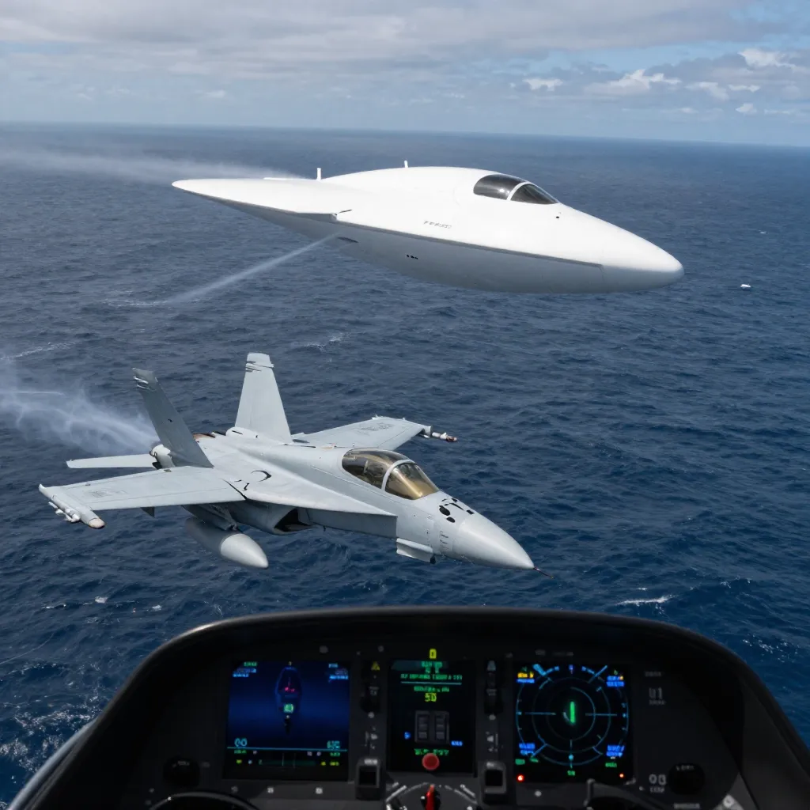

USS Nimitz Tic Tac Encounter: The Navy Pilot UFO Sighting That the Pentagon Couldn't Explain

A white shape over foaming water
It is November 14, 2004, off the coast of Southern California. Commander David Fravor is flying a Navy jet over the Pacific Ocean. He commands a squadron of F/A-18F Super Hornets from the aircraft carrier USS Nimitz.
He flies down toward a spot on the sea. There he sees something odd. A patch of water is churning and foaming.
Above that water, an object hovers and drifts in an uneven way. Fravor said he had never seen anything like it, and he was an experienced Navy pilot.
What he and the others said they saw that day is often called one of the best-known UFO cases in American military history. Let us go back a few days, to find out why the pilots were there.
Strange dots on the radar
That morning, Fravor took off for a standard air defense exercise. A larger group of Navy ships took part. One of them was the USS Princeton, a cruiser with advanced air defense radar. The pilots expected a routine mission.
But the story began some days earlier. Fravor has said that the Princeton’s radar had tracked unusual contacts for about two weeks. Other crew members said it was about a week. The objects seemed to appear at about 80,000 feet. They dropped fast and then stopped at about 20,000 feet.
If those radar tracks were right, no known aircraft could do that. But radar can make mistakes, and experts have not agreed on what it showed.
On November 14, the radar showed the objects again. The Princeton passed the news to the Nimitz air wing. Fravor and another pilot, Lieutenant Commander Alex Dietrich, were sent to check it out. Each pilot had a weapons officer in the back seat. Together, they said that four people saw the object.
The Tic Tac that would not be caught
The object had no wings. Fravor said it was about 40 feet long. It was later nicknamed the Tic Tac, after the small white mint. It was smooth, white, and plain. He saw no markings and no exhaust.
It moved with a wobbling motion. Fravor began to fly down in a wide circle to see it better. The Tic Tac seemed to copy his path across the circle, as if it knew he was coming.
Then Fravor cut across the circle to get closer. The object sped up at once. It moved so fast that it seemed to disappear. Fravor said it was far faster than any aircraft he had met. He and the other crew said they watched it for about five minutes.
The strangest part came afterward. Fravor flew back to the Nimitz. The radar operators on the Princeton said the object had shown up again about 60 miles away, less than a minute later.
So far, this is only the word of the pilots. But there is a video too.
A camera and three videos
After Fravor’s flight, another pilot, Lieutenant Commander Chad Underwood, took off from the Nimitz. His F/A-18F carried a Forward-Looking Infrared pod, or FLIR. That is a camera that sees heat. Underwood recorded the video of the Tic Tac. He is also credited with giving the object that nickname.
The video shows a white, oval object in the air. It has no wings and no tail that you can see. At one point it moves very quickly and leaves the view of the camera.
The video leaked to the internet in 2007. In December 2017, The New York Times published it, and people began sharing it widely. In 2019, the Pentagon said the videos were real. In April 2020, the Department of Defense released three Navy videos officially. It said that Navy people had filmed them and that what they showed was still “unidentified.”
Two of the videos came from another case. In 2014 and 2015, Navy pilots from the USS Theodore Roosevelt carrier group met objects they could not identify. One video, called “Gimbal,” shows an object that seems to spin. The other, “Go Fast,” shows an object that seems to move fast over the ocean.
So what could the Tic Tac have been?
Idea one: planes, balloons, and glare
Some skeptics have simple ideas. A researcher named Mick West said that objects like these could be planes or balloons. He said that glare in an infrared camera can make them look strange. Other experts point to sensor problems.
Here is a reason to take this idea seriously. A video cannot show size or distance well. The pilots had no way to measure how fast the object moved. In 2023, the Pentagon released more clips. Some of them turned out to be ordinary airliners.
But this idea has a hard time with the pilots’ report. Several trained officers saw the object with their own eyes, and the radar operators said they tracked it.
Idea two: a secret program or a mistake
After 2017, official groups began to look. Reporters for The New York Times wrote about a secret Pentagon program called the Advanced Aerospace Threat Identification Program, or AATIP. It began in 2007, and the Pentagon says it ended in 2012. It had about $22 million over five years.
A man named Luis Elizondo said he ran it. The Pentagon later said that he had no part in running it.
In June 2021, the Office of the Director of National Intelligence sent Congress a report on what it called unidentified aerial phenomena, or UAP. That is the new name for UFOs. The report looked at 144 reports from US government sources, from 2004 to 2021. It could explain only one of them, a large, deflating balloon.
The report said UAP clearly pose a safety of flight problem. It said they may pose a challenge to national security. It did not say what the objects were. It listed possible groups, such as clutter in the air, natural weather effects, secret US projects, and foreign systems.
In September 2023, NASA published the report of its Independent Study Team on UAP. The report gave advice on how to study such events with better data.
Idea three: something we cannot name
This is the idea that makes people lean forward. Fravor said the object went well beyond the science and tools that the Navy had at the time. He also said that it seemed to know the jets were there, copied his moves, and then sped away.
In July 2023, Fravor spoke under oath to a House Oversight subcommittee. Another former Navy pilot, Ryan Graves, also spoke about his own sightings. Fravor described the Tic Tac in detail.
That is a strong claim, and it needs strong proof. A pilot’s eyes are good evidence, but they are not a measurement. Nobody has shown that the object was a machine from another world, or from another country. Nobody has shown that it was not.
So what is left to say?
Back over the Pacific
Let us go back to that patch of foaming water. Several trained military officers saw something there. Radar operators reported tracking it. A military camera filmed an object in infrared. The Department of Defense said the videos were real Navy footage.
Some people call it one of the most credible UFO cases ever. Still, nobody has explained it. The videos are real, and the pilots are real. But the Pentagon has not said what the object was.
So here is where we stand. We know what the pilots said, and we know what the camera filmed. We do not know what was in the sky over the Pacific Ocean on November 14, 2004. That question is still open.
References & Further Reading
📚 Recommended Reading: Military Response To Ufo Activity (on Amazon) — As an Amazon Associate, we earn from qualifying purchases.
Editorial note: The Navy videos and the pilots' reports are real, and the Pentagon calls the objects unidentified. Nobody has shown what the object was, and some experts think radar, cameras, or ordinary aircraft could explain the videos. See our Editorial Policy.